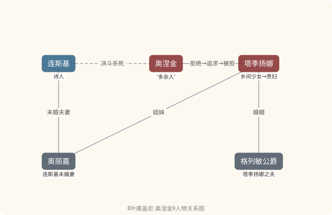

叶甫盖尼·奥涅金
一、基本信息
| 作者 | 普希金 |
|---|---|
| 成书/出版 | 1823年始写、1833年完整出版（Britannica：Yevgeny Onegin (begun 1823)） Aleksandr Pushkin — Encyclopaedia Britannica（百科全书） |
| 国别/地区 | 俄国 |
| 时代 | 近代 · 19世纪 |
| 体裁 | 诗体长篇小说（十四行诗节） |
| 语言 | 俄语（'奥涅金诗节'） |

《叶甫盖尼·奥涅金》人物关系图（人物关系图）
二、创作背景
地位（Britannica）：'the first Russian work to take contemporary society as its subject, paving the way for the Russian realistic novel'（首部以当代社会为题材的俄国作品，为俄国现实主义小说铺路）。
'奥涅金诗节'：十四行诗节（AbAbCCddEffEgg——通说待核）——普希金发明的俄语诗节（通说待核）。
三、内容脉络
奥涅金：圣彼得堡纨绔子弟——继承叔父庄园，在乡间与青年诗人连斯基为友；拒绝塔季扬娜的求爱信（通说）。
决斗与悲剧：在塔季扬娜命名日调戏奥丽嘉，激怒连斯基决斗并杀死好友（通说）——漫游。
结局：数年后回京，塔季扬娜已嫁将军成社交女王——奥涅金狂热追求被拒：'但我已嫁给了别人，我将一辈子忠于他'（原文意，公有领域）——以塔季扬娜的拒绝收束（通说）。
四、主要人物表
| 人物 | 身份 | 说明 |
|---|---|---|
| 奥涅金 | 纨绔青年 | '多余人'原型（通说待核） |
| 塔季扬娜 | 乡间少女→贵妇 | 普希金'最亲爱的'形象（通说待核） |
| 连斯基 | 浪漫诗人 | 被奥涅金杀死的友人 |
| 奥丽嘉 | 塔季扬娜妹妹 | 连斯基未婚妻 |
五、主题与艺术特点
- '多余人'：俄国文学的原型人物（通说待核）。
- 爱情与'忠诚'：塔季扬娜的拒绝——道德的自我（通说）。
- 艺术特点：'奥涅金诗节'、抒情插笔与讽刺（通说待核）。
六、影响与评论
- Britannica（Pushkin 条）：Yevgeny Onegin (begun 1823)——'first Russian work to take contemporary society as its subject'。
Aleksandr Pushkin — Encyclopaedia Britannica（百科全书） - Britannica：语言风格塑造屠格涅夫冈察洛夫托尔斯泰。
Aleksandr Pushkin — Encyclopaedia Britannica（百科全书） - 柴可夫斯基歌剧（1879，通说待核）。
Aleksandr Pushkin — Encyclopaedia Britannica（百科全书） - 中译：冯春/智量译本（通说待核）。
Aleksandr Pushkin — Encyclopaedia Britannica（百科全书）
七、阅读建议
难点
- '奥涅金诗节'韵律——中译难以复制（通说待核）。
- 抒情的'插笔'（作者与读者对话）——注意叙述者。
- 冯春译《叶甫盖尼·奥涅金》（上海译文出版社，通说待核）。
- 智量译本（人民文学出版社，通说待核）。
- 英译：Vladimir Nabokov 四卷本（Bollingen，通说待核）。
通读八章 → 精读'塔季扬娜的信'与结尾拒信 → 对照歌剧（柴可夫斯基）。
八、待核实
- 1825年首章出版与1833年完整版细节待核。
- 冯春/智量译本信息待核。
- Nabokov 英译四卷（1964，通说）待核。
- 1879柴可夫斯基歌剧细节待核。
本页主要来源
普希金的其他收录作品：叶甫盖尼·奥涅金